1974
Fittipaldi
The 1974 season was the 28th Formula one season and consisted of 15 races, starting in Argentina and ending in the US.
The championship fight between McLaren and Ferrari ended up lasting until the final race of the season.
Emerson Fittipaldi finished fourth for McLaren to ensure that he was the World Champion, beating Regazzoni for Ferrari by three points.
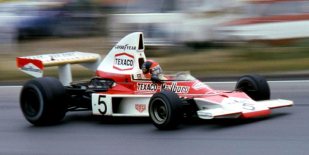
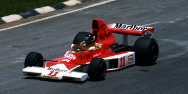
The 1976 season was the 30th Formula one season and consisted of 16 races, starting in Brazil and ending in Japan.
The championship fight once again was between McLaren and Ferrari and lasted until the final race of the season.
McLaren driver James Hunt finished 3rd in the Japanese Grand Prix, securing enough points to win the championship by 1 point.
There were also 2 races that were ran that didn't count towards the championship, Hunt won both.
1976
Hunt
1984
Lauda
The 1984 season was the 38th Formula one season and consisted of 16 races, starting in Brazil and ending in Portugal.
McLaren won the constructors championship after just 11 races, McLaren dominated the season winning 12 out of the 16 races.
Niki Lauda won the drivers championship in the final round, beating his fellow McLaren teammate Alain Prost by just half a point.
The half a point win is the smallest championship win margin in the history of the sport, and is the last championship won by an Austrian driver.
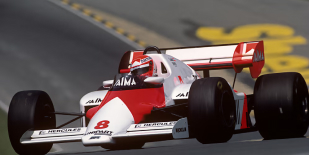
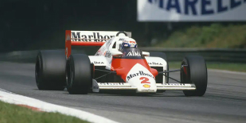
The 1985 season was the 39th Formula one season and consisted of 16 races, starting in Brazil and ending in Australia.
This was the second championship win in a row for McLaren, but this time it was won by Alain Prost. Lauda, the reining champion came 10th.
This was the final championship Niki Lauda raced in before retiring. He won 3 championships, 2 with Ferrari and 1 with McLaren.
Alain Prost won the championship in the 14th round, the European Grand Prix which was held at the Brands Hatch circuit.
This was the first championship Alain Prost won in his career, the first of four in total.
1985
Prost
1986
Prost
The 1986 season was the 40th Formula one season and consisted of 16 races, starting in Brazil and ending in Australia.
This was the second championship in a row for Prost and the third for McLaren.
Alain Prost won the championship after a 3-way battle for the title between himself, Nigel Mansell & Nelson Piquet in the final round.
Both Mansell & Piquet raced for Williams with Mansell as the favourite due to him leading the championship.
But after Mansell retired from the race, Prost won the championship after winning the race. McLaren team mate Senna came 4th.
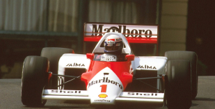
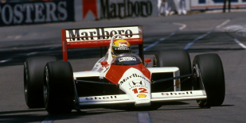
The 1988 season was the 42nd Formula one season and consisted of 16 races, starting in Brazil and ending in Australia.
This was the first season Ayrton Senna claimed the championship after winning 8 of the 16 races.
Teammate Alain Prost managed to win 7 races and finish 2nd 7 times, but this was not enough to beat Senna who finished 3 points ahead of Prost.
This was also a record breaking season for Senna, as he now set the highest total race wins in a season.
The 1988 season was a dominant season for McLaren as they won 15 out of the 16 races. With Ferrari winning the Italian Grand Prix.
1988
Senna
1989
Prost
The 1989 season was the 43rd Formula one season and consisted of 16 races, starting in Brazil and ending in Australia.
Alain Prost managed to win back the championship from his reining champion teammate Senna with 4 wins out of the 16 races.
Despite Senna winning 6 races of this season, he fell short of the championship win by 16 points. Losing the fight in the 15th round.
The championship was won in the Japanese Grand Prix where neither McLaren finished the race, Prost was forced to reture and Senna was disqualified.
Senna was disqualified from the race after an incident with Prost that caused Prost to retire.
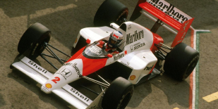
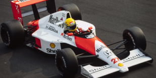
The 1990 season was the 44th Formula one season and consisted of 16 races, starting in the USA and ending in Australia.
Senna claimed his 2nd championship title by beating his now ex-teammate & reining champion Alain Prost.
Prost had left McLaren for Ferrari due to reliability concerns with the car. He finished 7 points behind Senna in the championship.
The championship was decidced in the final race of the season, with Senna retiring from the race. But with enough points to win.
The final race was held at the Australian Grand Prix, which was also the 500th World Championship Grand Prix race.
1990
Senna
1991
Senna
The 1991 season was the 45th Formula one season and consisted of 16 races, starting in the USA and ending in Australia.
This was Senna's 3rd and final championship win. He beat Williams driver Nigel Mansell by 24 points.
The championship was decided in the penultimate race at the Japanese Grand Prix, Senna finished 2nd but Mansell retired after spinning out.
Senna won 7 out of the 16 races, with teammate Gerhard Berger winning just one race that season for McLaren.
This was the final championship Senna won. He moved to Williams in 1994 and died in a fatal crash the same year.
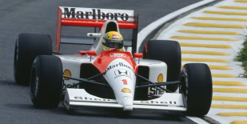
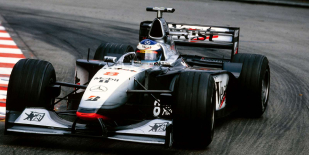
The 1998 season was the 52nd Formula one season and consisted of 16 races, starting in Australia and ending in Japan.
Mika Häkkinen won his first championship with McLaren, beating Ferrari driver Michael Schumacher by 14 points.
Both the drivers' championship and the constructors's championship were decidced in the Japanese Grand Prix after Schumacher retired mid-race.
The championship fight was between McLaren and Ferrari who won every race between them except the Belgian Grand Prix.
Both Ferrari drivers and Hakkinen retired from the Belgian Grand Prix due to racing incidents caused by the weather.
1998
Hakkinen
1999
Hakkinen
The 1999 season was the 53rd Formula one season and consisted of 16 races, starting in Australia and ending in Japan.
Häkkinen defenfed his world title status by beating Ferrari driver Eddie Irvine by 2 points at the Japanese Grand Prix.
By the mid-way point in the season, Schumacher was leading the championship but had to miss 7 races due to a 200mph crash at Silverstone.
This was Häkkinen's second and final championship title before he announced his sabbatical a few years later.
The sabbatical turned into retirement for Häkkinen as he decided he no longer wanted to return to the sport.
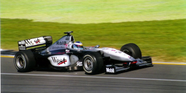
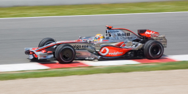
The 2008 season was the 62nd Formula one season and consisted of 18 races, starting in Australia and ending in Brazil.
Hamilton fought for the championship in 2007, his rookie year, and fell short by just 1 point.
He won the championship at the Brazilian Grand Prix in dramatic fashion by overtaking Toyota's Timo Glock in the final corner of the last lap.
Ferrari driver Felipe Massa thought he won the championship after winning the Brazilian Grand Prix, but shortly found out he finished runner up after Hamilton's last lap overtake for 5th place. Which gave Hamilton the championship by 1 point.
2008
Hamilton
Championships